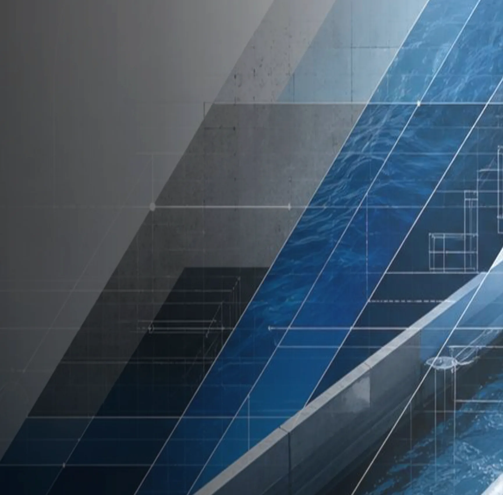
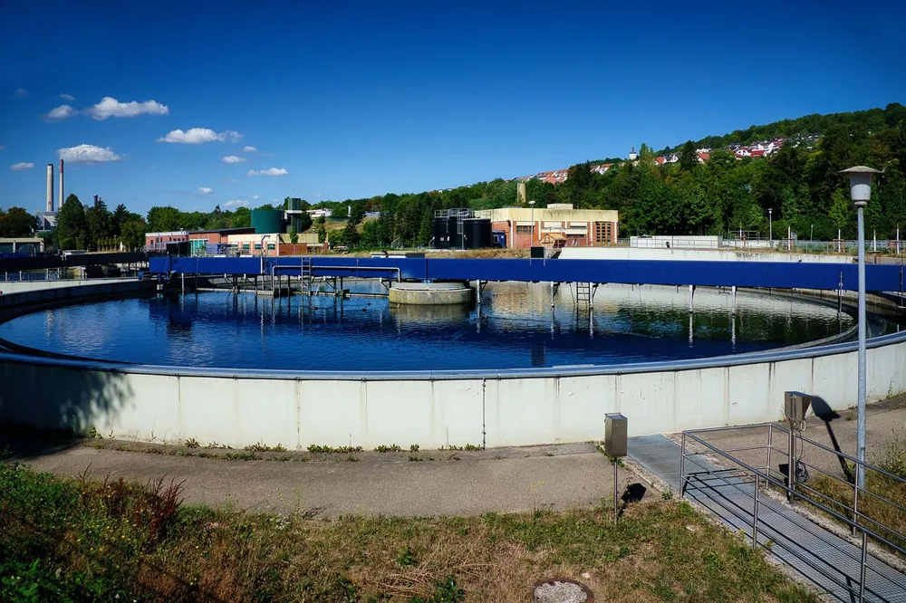
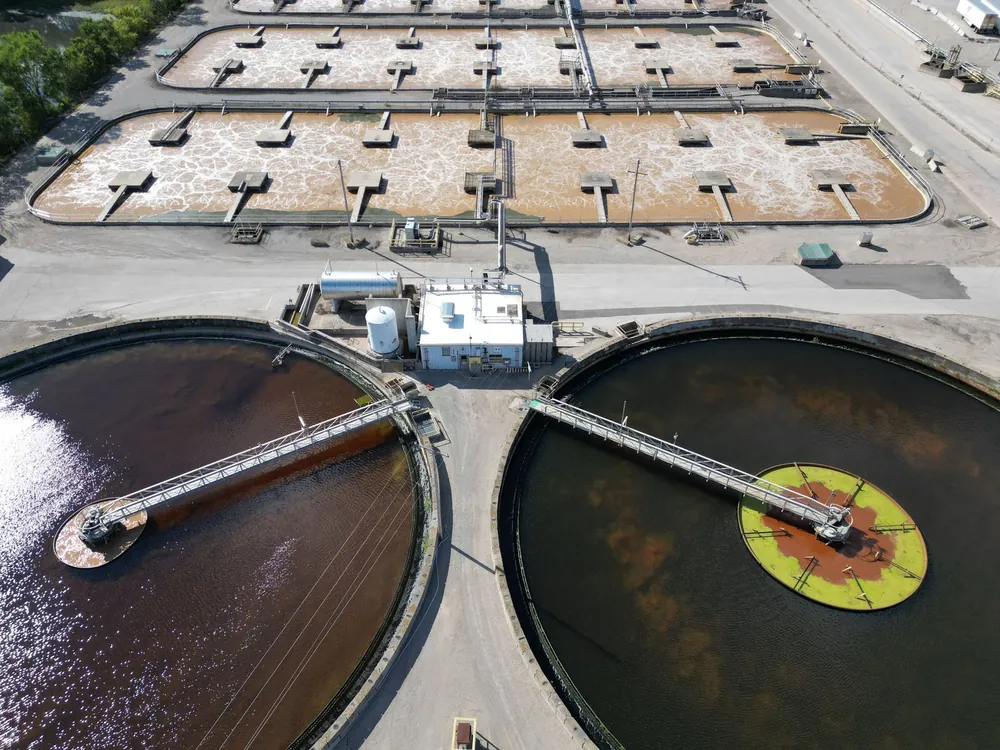
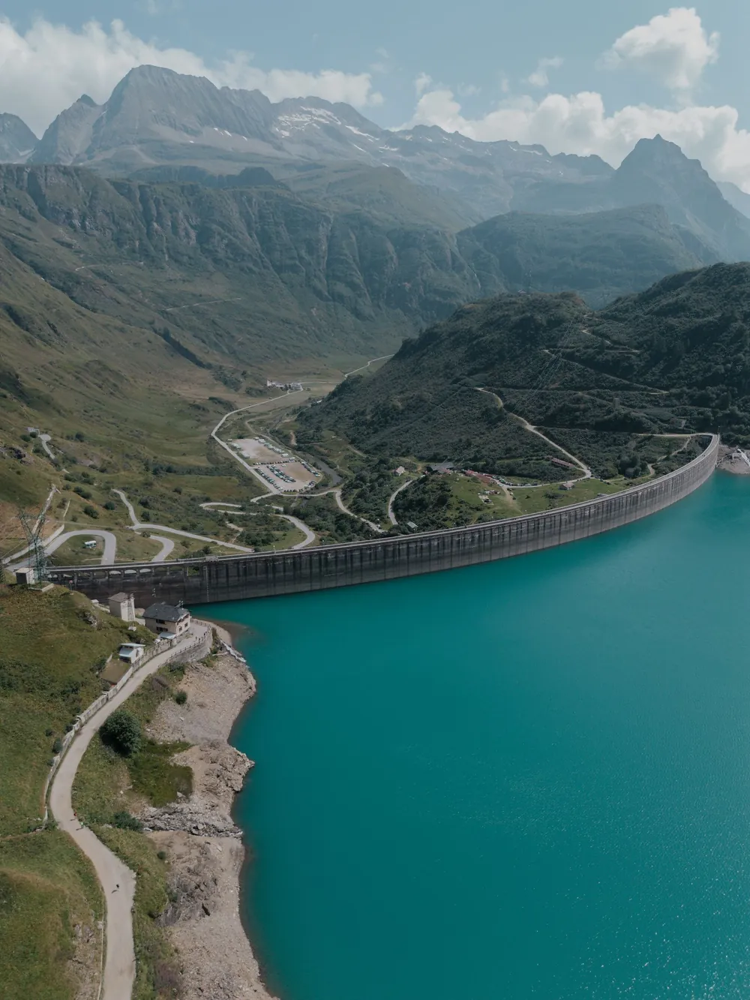
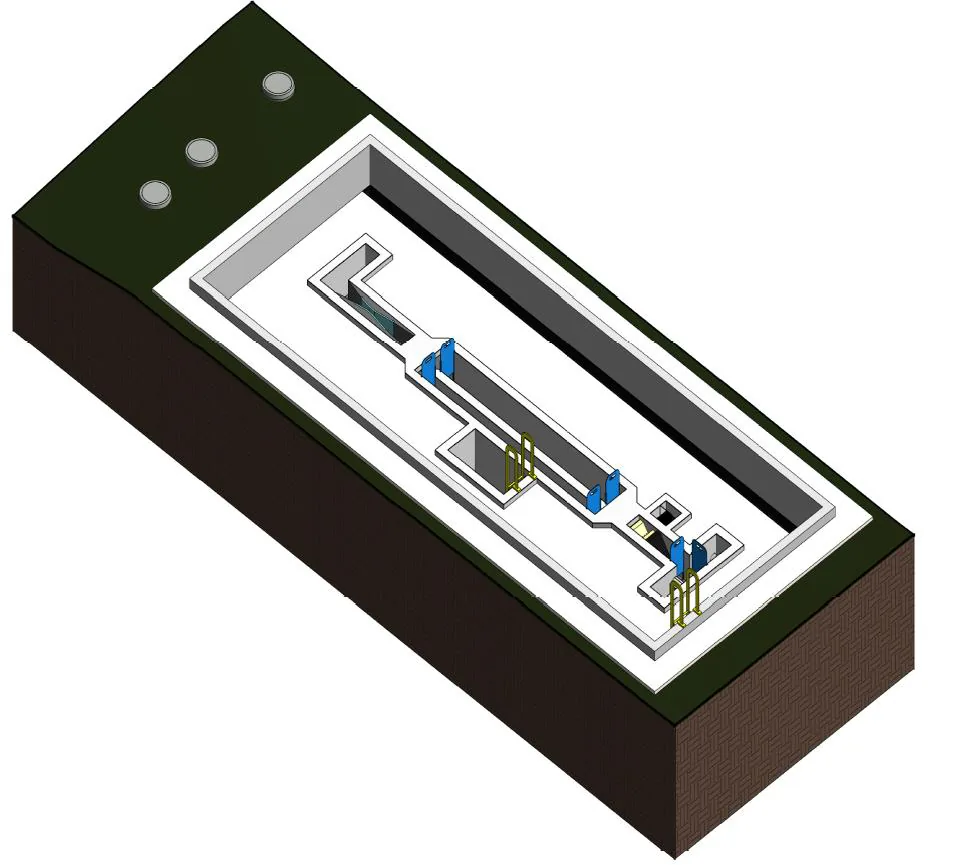
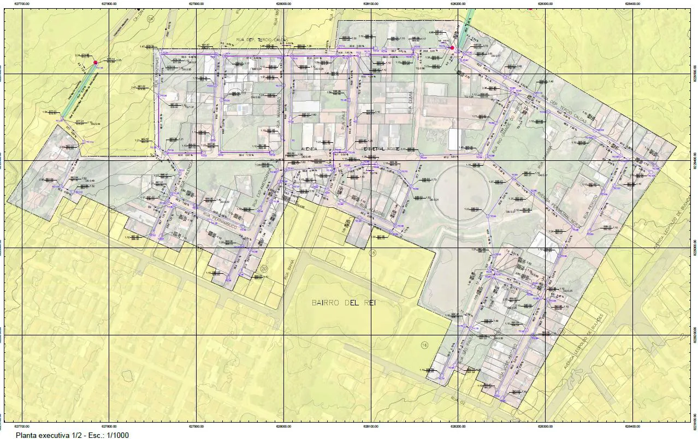
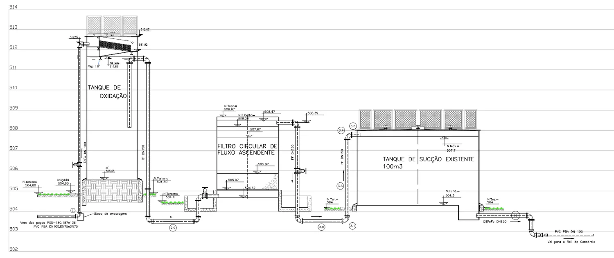
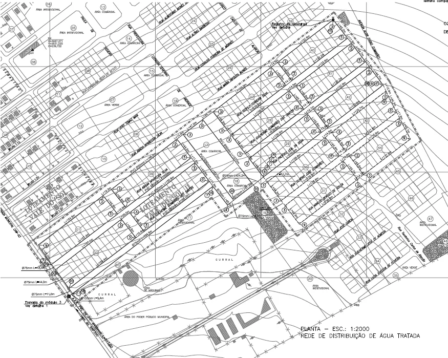
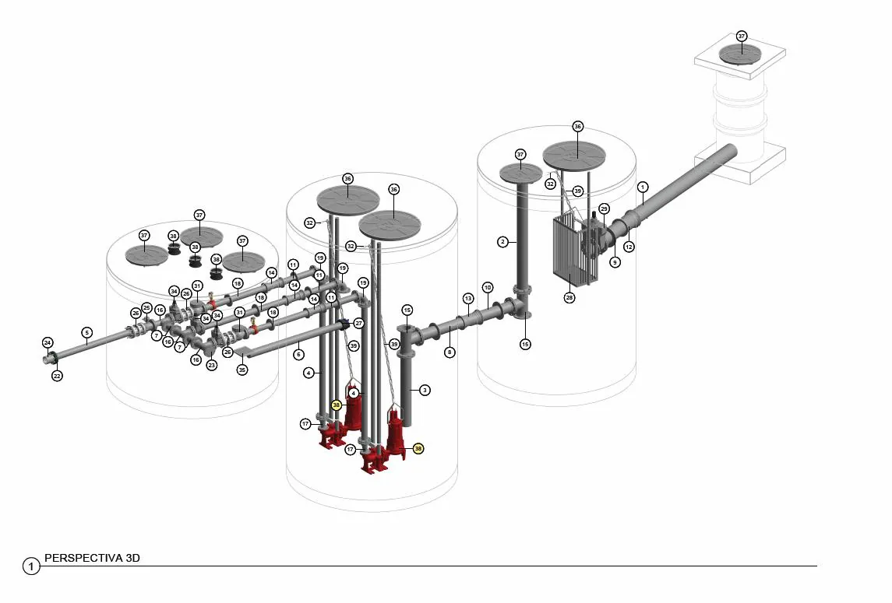
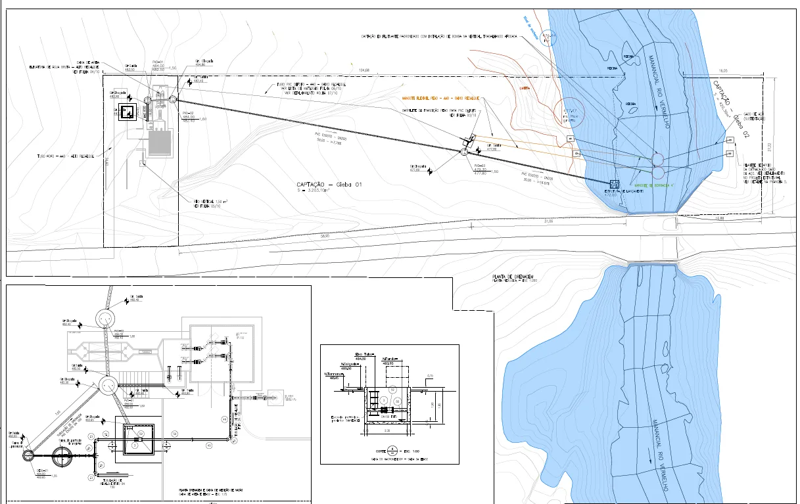

O que fazemos
Estudos e projetos para implantação, ampliação e modernização de sistemas de saneamento.

Projetos e Consultoria em Saneamento
Estudos e projetos para infraestrutura de água e esgoto — do estudo técnico ao projeto executivo, para concessionárias, construtoras e gestores públicos.
Apresentação
Estudos e projetos para implantação, ampliação e modernização de sistemas de saneamento.
Abastecimento de água, esgotamento sanitário, recursos hídricos e infraestrutura hidráulica.
Concessionárias, construtoras, gestores públicos e equipes responsáveis por obras de infraestrutura.
Nossos serviços
A atuação técnica combina hidráulica, implantação civil e requisitos operacionais para entregar projetos claros, compatíveis e prontos para contratação de obras.

Captações, adutoras, reservatórios, elevatórias, tratamento de água, redes de distribuição e estudos hidráulicos/hidrológicos.

Redes coletoras, interceptores, sifões invertidos, elevatórias, linhas de recalque e estações de tratamento de esgoto.

Concepções técnicas, estudos hidrológicos, transientes hidráulicos, autodepuração de corpo receptor e modelagem hidráulica.
Resultado para o cliente: menor risco técnico, maior previsibilidade de contratação e projetos mais aderentes à operação.
Solicitar orçamentoExperiência
Cases técnicos

Esgotamento sanitário · Santo Antônio de Goiás-GO
ETE com capacidade de 24 L/s: gradeamento médio, desarenador e medidor Parshall, com entrega orientada à implantação, operação e manutenção.
2 imagens
Esgotamento sanitário · Itaberaí-GO
Definição de traçados, áreas de contribuição, lançamentos e elementos de implantação para expansão do atendimento urbano.
2 imagens
Abastecimento de água · Cidade de Goiás-GO
Filtro ascendente de 15 L/s, tanque de contato/oxidação, reservatórios, elevatória de água tratada e 1 km de adutora.
2 imagens
Abastecimento de água · Caçu-GO
15,8 km de rede, 4,5 km de adutora, reservatório de 300 m³, elevatória de 10 cv e travessia não destrutiva sob rodovia.
2 imagens
Esgotamento sanitário · Santo André-SP
Arranjo hidráulico e detalhamento de poço, tubulações, barriletes e componentes operacionais para EEE de 3 L/s.
2 imagens
Abastecimento de água · São Luiz do Norte-GO
Captação em balsa de 15 L/s, tratamento preliminar, elevatória e 5,4 km de adutora de água bruta DN 150.
2 imagensDireção técnica
A liderança técnica reúne profissionais com experiência em elaboração, coordenação, fiscalização e gestão de projetos de saneamento. Essa combinação reduz retrabalho, melhora a compatibilização entre disciplinas e fortalece a qualidade das entregas.
Engenheiro Civil. Especialista em sistemas de esgotamento sanitário, gestão de recursos hídricos e engenharia de barragens.
Engenheiro Civil. Especialista em sistemas de esgotamento sanitário.
Engenheiro Civil. Master BIM, especialista em sistemas de esgotamento sanitário, estruturas e fundações.
Engenheiro Civil. Especialista em sistemas de esgotamento sanitário.
Vivência em fiscalização, coordenação e gestão de empreendimentos, conectando projeto, obra e operação.
Integração entre hidráulica, civil, operação, manutenção e requisitos do contratante desde a concepção.
Dúvidas frequentes
Estudos e projetos para implantação, ampliação e modernização de sistemas de saneamento: abastecimento de água, esgotamento sanitário, recursos hídricos e infraestrutura hidráulica.
Concessionárias, construtoras, gestores públicos e equipes responsáveis por obras de infraestrutura.
Entrega integrada: do estudo técnico ao projeto executivo, orientado à implantação, operação e manutenção.
Sediada em Goiânia/GO, com projetos desenvolvidos em Goiás e em outros estados, como São Paulo.
Contato
Fale direto com a direção técnica — do estudo de concepção ao projeto executivo.
Conte, pelo WhatsApp, o que seu empreendimento precisa.
Analisamos escopo, estudos existentes e requisitos de operação.
Escopo, prazos e entregáveis definidos com clareza.